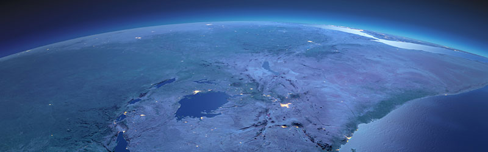

IMO has made a level of ambition to reduce the carbon intensity by 40% by 2030 as compared to the 2008 limits.
The IMO cap is on the emissions per ship rather than on the industry’s total emissions. IMO has mandated it as CO2 emissions per transport work. But since “per transport work” The EU has already adopted Transport work is defined as the total amount of cargo or passengers carried multiplied by the total distance sailed). the fourth IMO study results published in August 2020 uses four different measures to estimate the carbon intensity.
They are Energy Efficiency Operational Index (EEOI), Annual Efficiency Ratio, CO2 emissions per distance traveled, CO2 emissions per hour underway.
The IMO in the run-up to the 2023 review will have to decide which of these measures to use as it firms up its strategy.
There are various ways to reduce carbon (CO2) emissions.
They are,
1)Making the engines fuel efficient,
2) the adopted practice recommended is speed optimization as a potential
to improve energy efficiency and in turn significant savings in
greenhouse emissions.

Alternatively, environmentally friendly fuels and technologies like Biofuels, LNG, LPG, Methanol, Wind assisted sails, Hydrogen, Electric power (Battery powered), and fuel cells.
LNG:
Of all relevant fossil fuels LNG produces the lowest CO2 emissions.
However, the release of unburnt methane (so-called methane slip)
could reduce the benefit over HFO and MGO because Methane has 25
to 30 times the greenhouse gas effect compared to CO2. Nevertheless,
the engine manufacturer’s claims that the tank to propeller equivalent
(TTP) CO2 equivalent emissions are of Otto cycle dual fuel, and
pure gas engines are 10 to 20 % below the emissions of the oil fueled
engines. The main component of LNG is Methane. LNG as a fuel does
not produce Sox emission. Since the boiling point of LNG is-163*C,
it must be stored in insulated tanks. LNG tanks use typically occupy
3 to 4 times the volume of equivalent amount energy stored in the
form of fuel oil. Currently, the price level is competitive with
MGO but competition with HFO may be difficult. Bunkering and distribution
of LNG still takes place by road. CAPEX costs for LNG are and continue
to be higher than costs associated with Costs with HFO with Scrubber
technology. The OPEX costs for LNG systems onboard are comparable
with the operational costs of oil fueled systems without scrubber
technology.
LPG:
Liquified Petroleum gas is a mixture of propane and butane in liquid
form. There are two main sources of LPG. It occurs as a byproduct
of oil and gas production or as a byproduct of an oil refinery.
LPG is more expensive than LNG but cheaper than low Sulphur oil.
The cost of installing an LPG system is roughly half that of an
LNG system. The operational costs of an LPG system excluding fuel
costs are expected to be comparable to those of oil fueled vessels
without a scrubber system.
ETHANOL:
It can be produced from a variety of sources but is typically produced
from Natural gas. Methanol is a liquid and can be stored in standard
fuel tanks for liquid fuels with certain modifications due to its
low flash point properties. The additional cost of installing Methanol
systems onboard a vessel is roughly one third the cost of installing
an LNG system. The operational costs for Methanol systems are expected
to be comparable with those for oil fueled vessels without scrubber
technology.
BIOFUELS:
The development of biofuels compatible with marine engines is still
at an early stage, but the first-generation bioethanol and biodiesel
industries have already been established and cost-competitive 2nd
generation biofuels are slowly becoming a concrete option. Biofuels
is a collective term for a range of energy carriers produced by
converting primary biomass residues into liquid or gaseous fuels.
The most promising for ships are hydro treated vegetable oil (HVO),
Fatty Acid Methyl Ester (FAME), and liquified biogas (LBG). Currently,
biofuels are more expensive than fossil fuels. There is a lack of
global infrastructure and bunkering facilities for biofuels. The
operational costs of biofuel systems are expected to be comparable
with those of HFO/MGO fueled vessels. However additional costs for
biofuels may result from monitoring, operational practice, and staff
training. Biofuels are currently more expensive than fossil fuels.
HYDROGEN:
Hydrogen is a colorless, odorless, nontoxic gas.On ships, it can
be stored as a cryogenic liquid, as a compressed gas, or chemically
bound. The cleanest fuel using renewable energy is hydrogen. Liquified
H2 can be used in future shipping applications. Because of its very
low energy density, its storage volume is very large. This may prevent
H2 from being used directly in deep sea shipping. The boiling of
H2 is very low -253*C. When stored as a compressed gas, its volume
is 10 to 15 times (depending on a pressure of 700 to 300 bar) the
volume of the same amount of HFO. Most of the H2 is produced from
fossil fuels. H2 as fuel is currently more expensive than fossil
fuels. Storage tanks for liquid H2 are expected to be more expensive
than LNG because of its lower storage temperature.
WIND ASSISTED PROPULSION:
Wind assisted propulsion is not a new technology but will require
some developmental technology to make a meaningful difference to
modern vessels. Wind assisted propulsion is today considered as
a means to reduce a ship's consumption of fossil energy. Some of
the wind assisted technologies are Flettner rotor, Dyna Rig, and
kites. Certain types of wind assisted systems may impede ship’s
loading and unloading. Exclusive dependence on wind power would
not be feasible. Therefore, a propulsion engine is required to compensate
for or buffer time losses when wind conditions are inadequate.
BATTERIES:
Electric power systems using batteries are more controllable and
easier to optimize in terms of performance, safety, and fuel efficiency.
Battery operated ships are used on ships with short voyages such
as ferries. The feasibility of battery-operated ships on large deep
sea ocean going ships is limited because of its large size and costs.
Lithium-ion battery cells are used. Batteries produce zero emission
during operation, but the manufacturing process is energy intensive
FUEL CELLS:
Fuel cell systems for ships are still under development but it will
take some time for them to reach a degree of maturity sufficient
to substituting Main Engines.
CONCLUSION:
The choice of the future fuel will be guided by the following-environmental
benefits, fuel compatibility, the availability of sufficient fuel
for the requirements in shipping, and fuel costs. The next five
years will tell which fuel or technology will lead the race to power
the ship in 2030. LNG in my opinion currently leads the race.
This is where Constellation Marine Services LLC come in. With over 25000 nominations and a good track record for the last 13 years, Constellation is well placed to do the above inspections and surveys efficiently and effectively. With a satisfied clientele and a name in the industry, we can achieve greater milestones in the years to come.
At constellation Marine services, we are committed to offer our clients bespoke solutions and services to any requirement, through its propriety offices located all across the UAE, and its knowledge and expertise of its staff which is second to none.